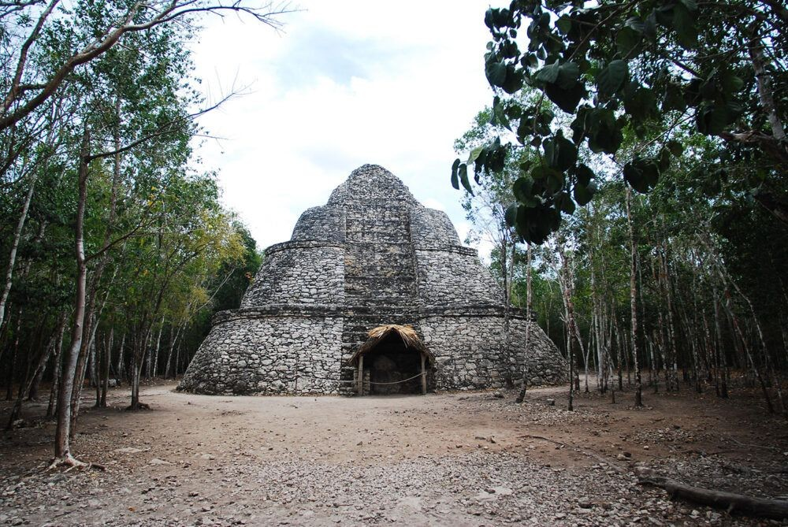
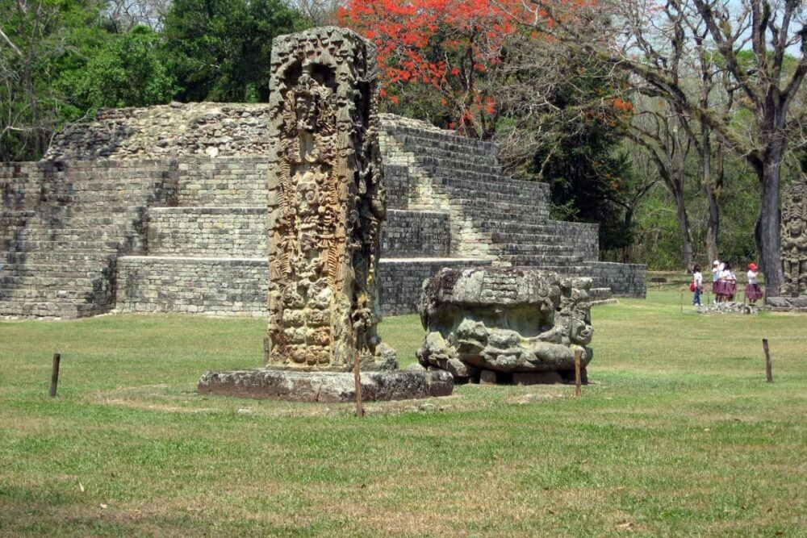
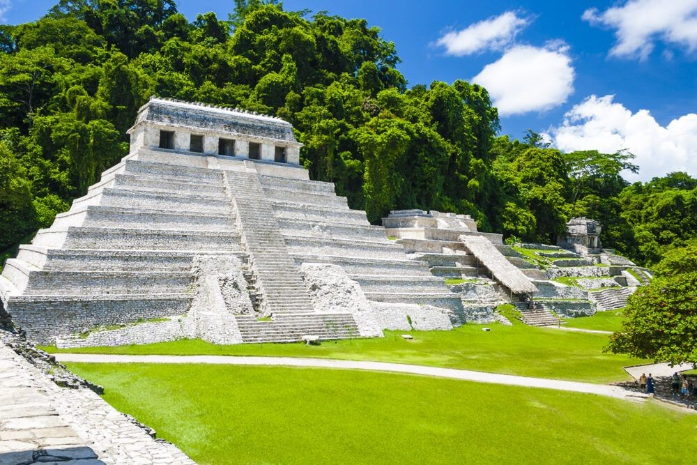
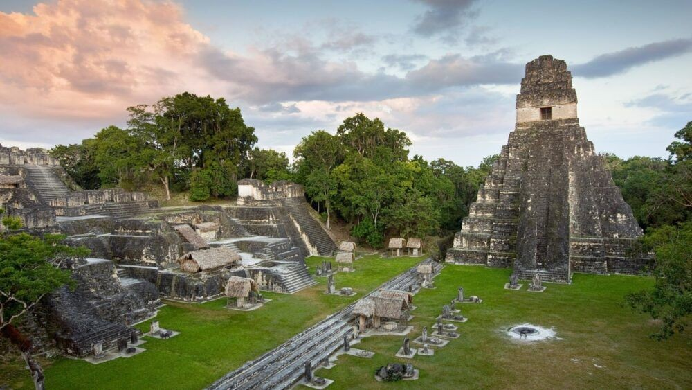
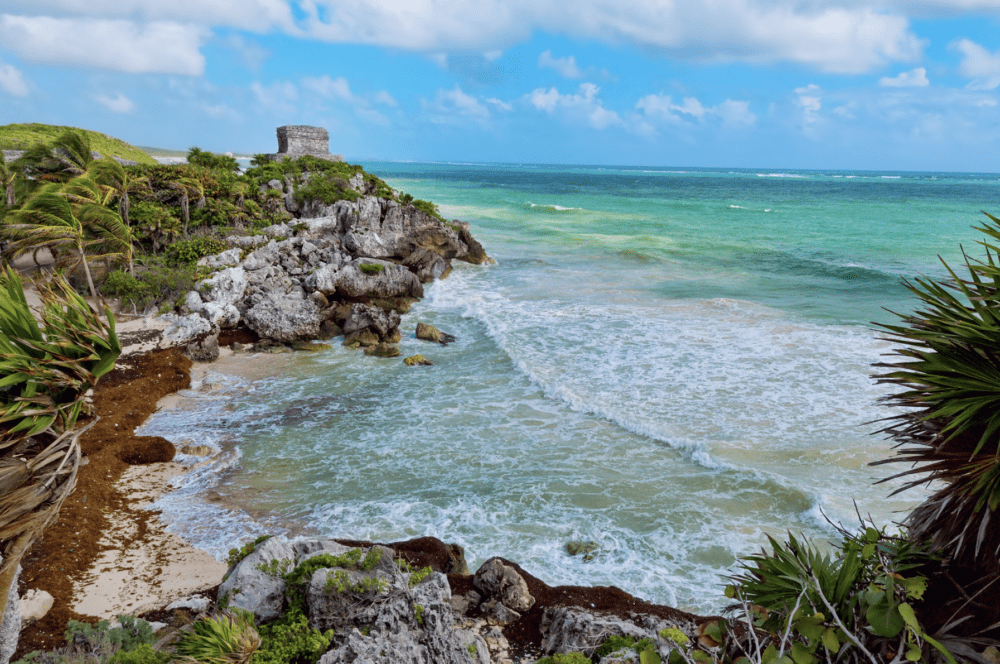

MONUMENTOS MITOLOGÍA MAYA
| MONUMENTOS | DEFINICIÓN | FOTO |
| TEMPLO DE KUKULKÁN | Es el apodo de uno de los templos mayas más espectaculares. El diseño del templo tiene un significado astronómico especial: cada cara de la pirámide tiene una escalera con 91 peldaños, que junto con el peldaño compartido en la parte superior, suman 365, el número de días del año. |  |
| COBA | Uxmal que significa "construido tres veces" en lengua maya, es uno
de
los sitios mayas mejor conservados de México. La estructura más reconocible y más alta a 115
pies es la Pirámide del Mago. Las capas de la pirámide del templo son ovales a diferencia de
las
capas rectangulares o cuadradas de otras pirámides mayas.
La pirámide parece haber sido construida en cinco fases, comenzando desde el siglo VI y continuando periódicamente hasta el siglo X. |
 |
| COPAN | Ubicada en el oeste de Honduras, era una ciudad maya relativamente pequeña conocida por su notable serie de estelas de retratos. Algunas de las estructuras de piedra de Copán datan del siglo IX a.C. La ciudad se convirtió en uno de los sitios mayas más importantes en el siglo V, con más de 20000 habitantes, pero fue misteriosamente abandonada unos siglos después.El punto más alto en Copán es el antiguo templo maya ahora conocido como Templo 16, que se eleva 30 metros por encima de la Gran Plaza de la ciudad. |  |
| PALENQUE | Es un sitio arqueológico que se ubicó en el extremo occidental del imperio maya en el actual estado de Chiapas, México. Es mucho más pequeño que algunas de sus ciudades vecinas mayas, pero contiene algunas de las mejores arquitecturas y esculturas que los mayas han producido. La mayoria de las estructuras datan de aproximadamente 600 a 800 d.C., incluyendo el Templo de las Inscripciones, la única pirámide mesoamericana construida como monumento funerario. |  |
| TIKAL | Está situado en la selva baja de Guatemala, es quizás el más improsionante de los sitios mayas. Los edificios restaurados se encuentran dispersos por toda la zona, mientras que muchos otros edificios en ruinas todavía están ocultos por la selva. Entre 200 y 900 d.C., fue la ciudad maya más grande con una población estimada entre 100000 y 200000 habitantes. Contiene 6 pirámides de templos muy grandes. El más grande, el Templo-pirámide IV, tiene unos 72 metros (230 pies) de altura y fue terminado alrededor del año 720 DC. |  |
| TULUM | Está situado en la costa este de la Península de Yucatán, México. Una vez sirvió como el principal puerto de la ciudad maya de Cobá. Fue construido alrededor del año 1200 d.C., cuando la civilización maya ya estaba en decadencia y por lo tanto carece de la elegancia de otros sitios famosos. Sin embargo, el telón de fondo de la playa tropical hace de este un sitio maya único que no debe perderse. |  |